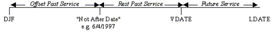

Actives Basis: Leaving
Guarantee Leaving Benefit of N/NS
Check this box if you want the benefits on withdrawal to be compared to the potential withdrawal benefit using service to retirement adjusted to reflect actual service over potential service i.e. N/NS. Leave this box unchecked if the deferred pension should not be compared.
The benefit paid will be increased to this minimum benefit where this is higher than the calculated accrued benefit.
If selected you will then be asked to enter the N/NS Maximum Service.
Note: Some fields are only available to some users.
N/NS Maximum Service
Enter the maximum service that applies to both the actual service and potential service used in the N/NS calculation of the withdrawal benefit in the Guaranteed Leaving Service Benefit of N/NS. This figure should be based on true service and not any service related accrual.
Note: Some fields are only available to some users.
Use Alternate NRA for Leaving/Accrued
Select from the drop-down list whether an alternative retirement age should be used for discontinuance and withdrawal liabilities. It will not be used for the retirement of active members.
This functionality is available on purchase.
For Users who have not purchased this functionality will only be able to
use it for a DAB Valuation Run. This field will be automatically set to
DAB Method only and greyed out.
For other users the options are:
- Never
- DAB Method Only
- All Valuation Methods.
If using this functionality then enter the Male and Female Deferral Age below.
Male Deferral Age
Female Deferral Age
This field allows an alternative retirement age to be specified for discontinuance and withdrawal liabilities. It does not apply to the retirement of actives.
Enter the NRA for discontinuance and withdrawal liabilities for males/females. The Alternate NRA can be before or equal to the NRA entered on the Membership Tab.
Male Benefit Basis
Female Benefit Basis
Select from the drop-down list how the spouse’s death in deferment pension benefits should be defined. The options are:
- None
- GMP then Spouse’s Fraction
- GMP then 1/160 Revalued
- Max(GMP,1/160) then Spouse’s Fraction
- Max(GMP,1/160) then 1/160 Revalued
- Spouse’s Fraction
For options other than None or Spouse’s Fraction the benefits will
be calculated differently for Slices before and after the Offset
Slices (the lowest slice number for which
GMPs underlying the benefits).
Consider the following service time line:

The benefit for each option in each of the periods is as follows:
| Option | Offset Past Service | Rest Past Service | Future Service |
|---|---|---|---|
| None | None | None | None |
| GMP then Spouse’s Fraction | Spouse’s GMP | % of Member’s Pension | % of Member’s Pension |
| GMP then 1/160 Revalued | Spouse’s GMP | 1/160 × Salary × Service, revalued in deferment | 1/160 × Salary × Service, revalued in deferment |
| Max (GMP,1/160) then Spouse’s Fraction | Greater of: Spouse’s GMP and 1/160 × Salary × Service | % of Member’s Pension | % of Member’s Pension |
| Max (GMP,1/160) then 1/160 Revalued | Greater of: Spouse’s GMP and 1/160 × Salary × Service | 1/160 × Salary × Service, revalued in deferment | 1/160 × Salary × Service, revalued in deferment |
| Spouse’s Fraction | % of Member’s Pension | % of Member’s Pension | % of Member’s Pension |
Please note the following about the above benefits:
GMP then 1/160 Revalued Benefit
The Start Date for the 1/160th benefit will be later of the Not After Date that is specified on the Offset Slice and the Start Date specified on this Tab.
The Finish Date for the 1/160th benefit will be the end date of the lowest number Slice specified i.e. LDATE in Slice 1.
The pension will be revalued in deferment according to the Deferred Revaluation Rate specified on the Financial tab.
Max (GMP, 1/160) then Spouse’s Fraction or Max (GMP, 1/160) then 1/160 Revalued
The Start Date for the Max (GMP, 1/160) benefit will be the later of Start Date and Not Before Date specified on this Tab. The Finish Date for the Max (GMP, 1/160) benefit will be the Not After Date that is specified on the Offset Slice.
The Start Date for the 1/160 Revalued in Deferment will be for the Not After Date that is specified on the Offset Slice. The Finish Date for the 1/160th benefit will be the end date of the lowest number Slice specified i.e. LDATE in Slice 1.
For both these options the user will be asked to specify whether to revalue benefits using the Revalue Pre-1997 1/160ths. If this box is checked then the benefit will be revalued according to the Deferred Revaluation Rate specified on the Financial tab .
Spouse’s Fraction
This will be determined from the benefits described on the Slices multiplied by the Benefit Percentage. In deferment the benefits will be revalued using the rate selected in the Revaluation in Deferment on the Slices Tab.
Note: Added Years and Pension Data Items
When valuing the death in deferment pension any Added Years or Pension Data Items specified on the Slices are included in the spouse’s death in deferment benefits valued using the Spouse’s Fraction but not in the 1/160ths pension benefits for death in deferment.
Male Benefit Percentage
Female Benefit Percentage
This field determines the proportion of pension paid to a spouse in the event of the member’s death in deferment. It will be used when the Death In Deferment Benefit Basis is either
- GMP then Spouse’s Fraction
- Max (GMP, 1/160) then Spouse’s Fraction or
- Spouse’s Fraction.
Enter the fixed percentage for all members here. For 50% enter 50.
Start Date
Select from the drop-down list the appropriate data item. This will be used to determine the start of the 1/160th accrual benefit and is required for the following Death in Deferment Benefit Basis options:
- GMP then 1/160 Revalued
- Max (GMP, 1/160) then Spouse’s Fraction
- Max (GMP, 1/160) then 1/60 Revalued
The start of the 1/160ths accrual for the first two options above (where compared with spouse’s GMP) will be the later of the data item entered and the Not Before Date entered below.
For option 4 where the 1/160th accrual is for Rest Past Service and
Future Service the start date used will be the later of the data item
and the Latest Finish Date on the Offset
slice.
Salary
Select from the drop-down list one of the nine Salaries previously defined on the Salaries Tab. This will be used to calculate the spouse’s death in deferment pension when the Death in Deferment Benefit Basis is one of the following options:
- GMP then 1/160 Revalued
- Max (GMP, 1/160) then Spouse’s Fraction
- Max (GMP, 1/160) then 1/160 Revalued
Male Not Before Date
Female Not Before Date
This field is used to determine the start of the 1/160th death in deferment pension for Death in Deferment Benefit Basis based on a 1/160th pension. The start date for the benefit will be the later of the date entered in this field and the Start Date.
If this field is left blank the service is assumed to start from the Start Date.
Enter a date in DD/MM/CCYY format.
Pension Increases in Payment
Select from the drop-down list the pension increase rate to apply to the 1/160ths benefit (in excess of spouse’s GMP where applicable). The options are:
- Main
- Special
- Pension Increase 3
- Pension Increase 4
Revalue Pre 1997 1/160
Where the Death in Deferment Benefit is the greater of the GMP and 1/160, then this field allows the 1/160th death in deferment pension from the Offset Past Service to be revalued in deferment before being compared to the spouse’s GMP.
Check this box if you want the Offset Past Service 1/160th pension to be revalued in deferment. Leave this box unchecked if this pension is not revalued in deferment.
Please note that 6/4/1997 is not automatically used by SuperVal. The
Pre-1997 in the title is purely a label (reflecting most likely date).
Costing Method
Select from the drop-down list how to value the death in deferment pension benefits. The options are:
- Costing Table
- Valuation Basis
Use Costing Table if you wish to apply annuities that are different to
those calculated using the valuation basis. Separate tables for males
and females will be required.
Use Valuation Basis to apply annuities in line with the valuation
basis.
Male Costing Table
Female Costing Table
This field will be used if the Death in Deferment Costing Method is Costing Table.
Double click to select the table containing the costing factor to be used for valuing the spouse’s pension on death in deferment. The table should contain the single premium costing factor per £1 of spouse’s pension at exit and should include the proportion married applicable.
Related
Decr Help
Rate tables can be selected by any of the following methods:
- Right-click on the field for a list of appropriate Rate Tables. For a field that will accept more than one type of Rate Table (e.g. Miscellaneous Tables), the list will be restricted to the current Table Type specified in the field – if you wish to see all allowable Rate Tables, delete the Table Type from the field before clicking; or
- Double Clicking on the field will produce the Rate Tables form where Rate Tables can be viewed (numerically and graphically) and Rate Tables can be added or edited. A Rate Table can be selected by pressing the Select button or double clicking on the Rate Table description in the tree; or
- the list of allowable Rate Tables can be scrolled through by
pressing the
<or>keys. The description of the Rate Table to the right of the field will change as each new Table is selected.
Linearly Interpolate Death in Deferment Costing Tables for mid-point Exit values
When checked, the system will linearly interpolate factors for mid year exits such as early retirements and deaths. For Normal Retirements, the system will apply no interpolation. If unchecked, the system will use the factor specified at the age nearest rounded down for mid year exits as previous versions have done.
Male Benefit Basis
Female Benefit Basis
Select from the drop-down list what to value as a lump sum payable to a spouse on death in deferment. The options are:
- None
- Return of Contributions
- Return of Contributions if no spouse
- Multiple of pension
If either Return of Contributions is selected or Return of
Contributions if no spouse, SuperVal will use the standard data item
AWC for contributions to the valuation date and increase this by the
member’s future service contributions specified on the Contributions
Tab. The data item for past contributions (ACW) should include interest
to the valuation date. The ROC in Service
Interest on the Contributions Tab will be used to
role up contributions until the member’s withdrawal. The ROC in
Deferral Interest on the Contributions Tab will
apply from withdrawal to death in deferment.
If Return of Contributions if no spouse is selected the benefit is
only valued for the proportion of members who do not have a spouse at
the point of death i.e. (1- Proportion Married at point of death).
If Multiple of Pension is selected, then SuperVal will value a
multiple of the deferred retirement pension. The Multiple is entered in
the Multiple Field.
Male Multiple
Female Multiple
Enter the multiple of pension to be paid if the Death in Deferment Lump Sum Benefit Basis is a Multiple of Pension.
SaveAs
Click the Save As button to save with a new file name.
Save
Clicking on the Save button allows you to save the entries.
Quit
Clicking on the Quit button allows you to exit without saving any of your changes.
In some of the screens you will be asked to confirm if you want to exit Ignoring all changes. If you click Yes, the file will be closed without saving any changes. If you click No you will be returned to your original screen.
From the Browser, the Quit button will take you to a graphical display of the results.